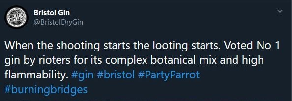

It turns out that the company Bristol Dry Gin is run by arseholes.
Bristol has a shitty past where we allowed companies in Bristol to take part in the slave trade, and that is a shame on our past.
Putting up with companies being complete twats in our city would be a shame on our present.
Please ask any bar, restaurant or delivery company you use, that still stocks their product to stop selling it.
A full screen grab of their original tweet is here.
Q: Shouldn't we give them a second chance?
A: This is not the first time they have been first class fucktards, as previously they thought people dying from nerve toxin was funny. Bristol distillery apologises to murdered woman's family for releasing joke "Novichok" vodka"
Q: Did they try to apologize?
A: They gave the worlds shittiest apology that also included the name of the product they wanted to spruik, to maximise the chance it would be shown in press coverage of their dickishness. Screenshot is here if you want to see it.
Q: Did they apologize properly yet?
A: They've hired a 'social media crisis management' company to try to cover up their actions.
Q: What action are you calling for?
A: Stop drinking their products and ask anyone still selling it to stop. Nothing more.
Q: Why does this site look so bad?
A: I'm not very good with CSS. If you want to make it look better, pull requests welcome on github https://github.com/Danack/BoycottBristolDryGin.
{kind=link}
{kind=link}